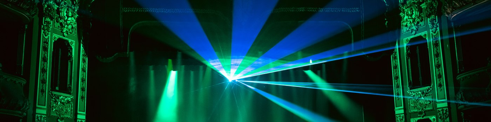

Cuatro maneras de hacer la misma pregunta Four ways of asking the same question
¿Qué nos conecta por debajo de lo que vemos? El cine, la foto, el escenario y la música son mis formas de buscar la respuesta. What connects us beneath what we see? Film, photography, stage and music are my ways of searching for the answer.

motion
Cine & videoFilm & video
photo
FotografíaPhotography

stage
Artes escénicasPerforming arts
music
Bandas sonorasSoundtracks